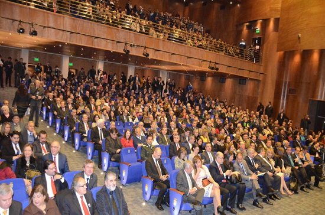
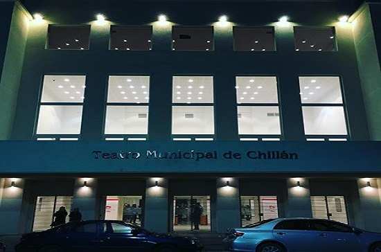
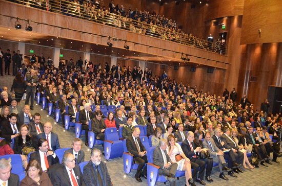
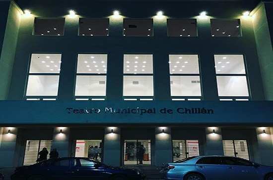

La Mejor entretención
Nevados De Chillán


Descubre y disfruta el Centro de Ski, BikePark y Resort de montaña más importante del sur de Chile.
Cine Hoyts Chillán


El cine de Chillán cuenta con 4 salas acondicionadas completamente, dentro de las cuales una es de tecnologia 4DX única en el sur de Chile.

Bioparque Quillón


En este lugar se pueden encontrar una gran cantidad de especies de animales y aves, especialmente en extinción.
Parque acuatico Quillón


El recinto cuenta con cuatro toboganes, piscina con juegos acuáticos para los niños y otra de más de Mil Metros Cuadrados para que los más grandes también disfruten. Existen amplias áreas verdes, zonas de picnic y cancha futbolito.
Teatro Municipal de Chillán
 



Este teatro se encuentra totalmente renovado, con una magnitud de 6.500 mt2, cuenta con 1218 butacas de gran comodidad ubicadas en 3 alturas y en el segundo piso se encuentra una sala de conciertos, denominada "Sala Claudio Arrau".
Encuéntranos en Pinto, Región del Bío Bío. Teléfono: (42) 220 6105

Encuéntranos en El Roble 770, Chillan, Chillán, Octava Región del Bio Bio. Teléfono (42) 221 0698

Encuéntranos El Roble 770, Chillan, Chillán, Región del Bío Bío. Teléfono 09 6438 0367

Encuéntranos en Arauco 205, Chillán.
Encuéntranos en el kilómetro 7,2 del camino de Quillón a Cerro Negro. Teléfono 09 9047 8860.
Encuéntranos en Camino Cerro Negro KM 6,5, Quillón, Región del Bío Bío. Teléfono: 09 9001 8627

Encuéntranos en 18 de Septiembre 590, Chillan, Chillán, Región del Bío Bío. Teléfono: (42) 234 1604
Encuéntranos en Ruta N55 camino a las termas de Chillán. Teléfono: 099783 4256